, gives
, gives ![\(\dd A_H/\dd t=\frac{1}{i\hbar}[A_H,H]\)](m/13b955f49781cbd3cca3fa38c0beb748b6e6caf4.svg) ; for
; for  .
.
Statement
Schrödinger picture: states move, operators fixed. Heisenberg picture:
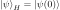
,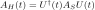
(Heisenberg 1925). Same predictions because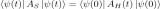
. Differentiating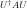
with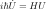
: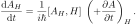
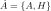
under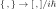
(Dirac).Ehrenfest theorem
With
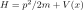
, using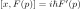
and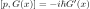
(Ehrenfest 1927):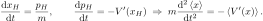
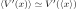
, i.e. when varies little over the packet (exact for at most quadratic).
varies little over the packet (exact for at most quadratic).
Interaction picture
Split
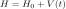
: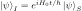
,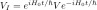
,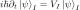
. Base of time-dependent perturbation theory and of the S-matrix of QED.Worked example
Free particle: . Then
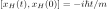
and, by the uncertainty relation,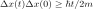
: every packet must eventually spread. An electron packet of 1 nm doubles its width in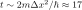
fs.Pitfall
Constants of motion in the Heisenberg picture (
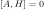
) are operators that do not change; it does not mean the state is an eigenstate of .
.